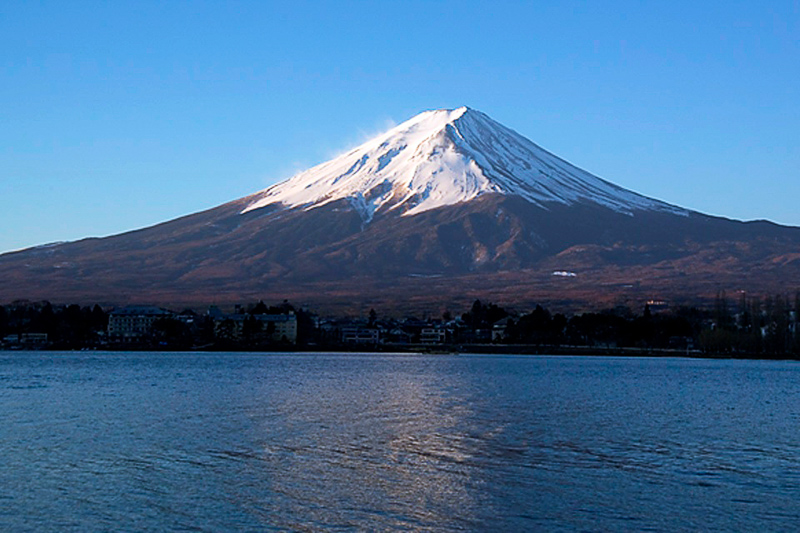

Francia
| Información | ||||||||||||||||||||||||||||||||
|---|---|---|---|---|---|---|---|---|---|---|---|---|---|---|---|---|---|---|---|---|---|---|---|---|---|---|---|---|---|---|---|---|
|
Francia, en Europa Occidental, abarca ciudades medievales, villas alpinas y playas mediterráneas. París, su capital, es famosa por sus firmas de alta costura, los museos de arte clásico, como el Louvre,y monumentos como la Torre Eiffel. El país también es reconocido por sus vinos y su gastronomía sofisticada. Los dibujos de la antigua cueva de Lascaux, el teatro romano de Lyon y el imponente Palacio de Versalles dan fe de su rica historia. |

| |||||||||||||||||||||||||||||||
| Actividades | ||||||||||||||||||||||||||||||||
Torre EiffelLa Torre Eiffel no es solo un símbolo de París, sino un símbolo de toda Francia. Erigida por Gustave Eiffel para conmemorar el centenario de la Revolución Francesa en 1889,la torre de 320 metros (1.050 pies).Ha este memorable momento se puede llegar a ver desde muchos lados de la capital pero desde siempre os recomendaremos coger el servicio de tour guiado. | target = "blanc_"> | |||||||||||||||||||||||||||||||
Disneyland® ParísDesde montar en Space Mountain hasta volar con Peter Pan y tomarse una selfie con Mickey Mouse, pocos parques temáticos ofrecen tanta magia de cuento de hadas como Disneyland®. Con alrededor de 14 millones de visitantes anuales, Disneyland® Paris es el parque temático más grande y concurrido de Europa |
|
| Visitar el monte FujiEl mejor momento para subir al monte Fuji es en julio y agosto.

|
| Aquí te dejamos un vídeo que podría aclararte algunas ideas sobre tu viaje.
| Alojamiento
|
|
Lugares para visitar
| Información de lugares para visitar
| Imagen de lugares para visitar
| Restaurantes
| Información de restaurantes
| Imagen de restaurantes
| | |||||||||||||||||||